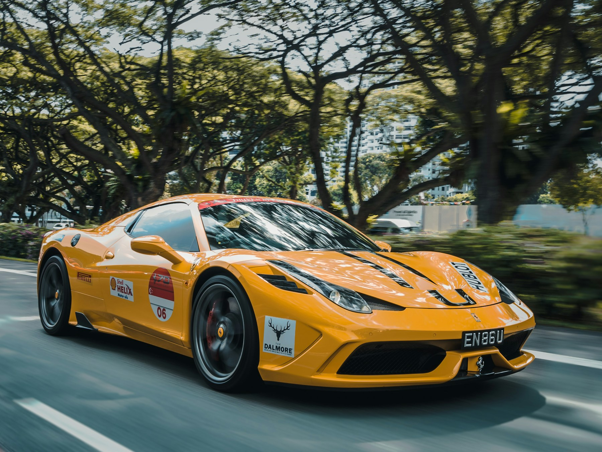
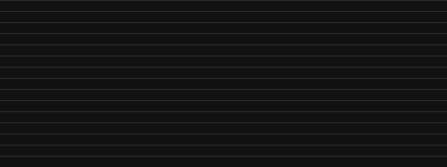

Imagens

assets/images/hero-car.jpg
BIBLIOTECA LOCAL
Ponto central para imagens, ícones, vídeos e animações reutilizáveis no projeto.

assets/images/hero-car.jpg
assets/icons/arrow-up-right.svg
assets/videos.assets/videos está reservado para mídia local.

assets/animations/scanline.svg